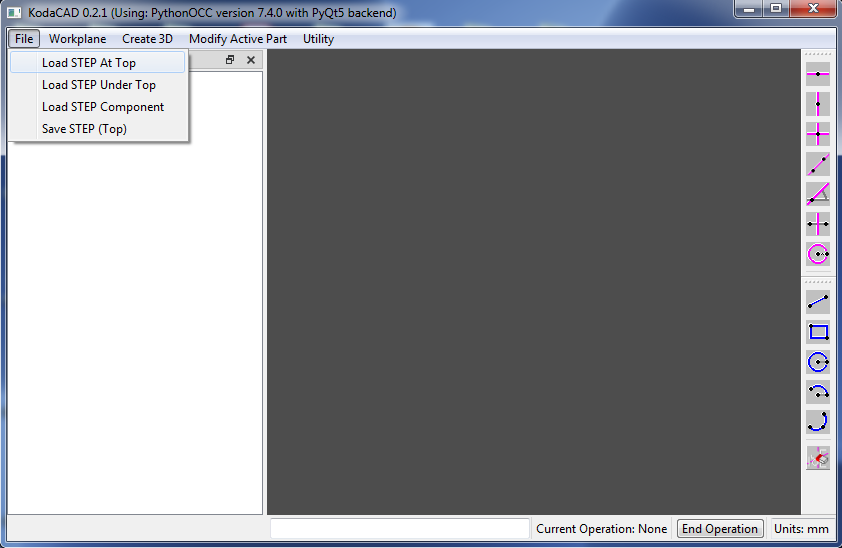
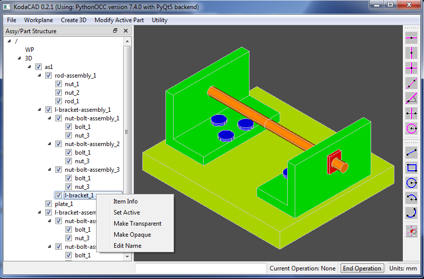
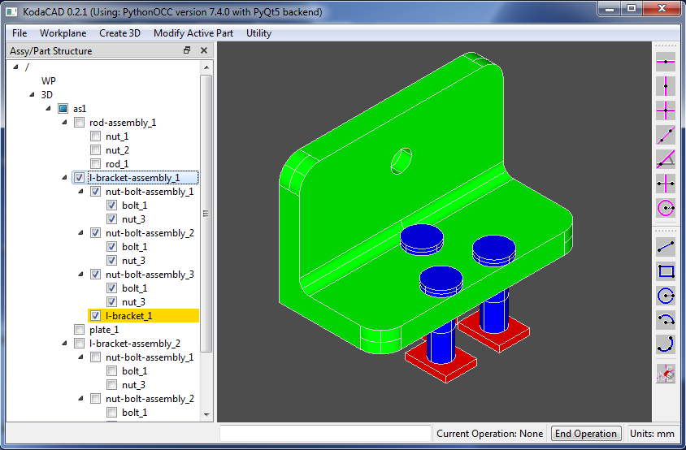
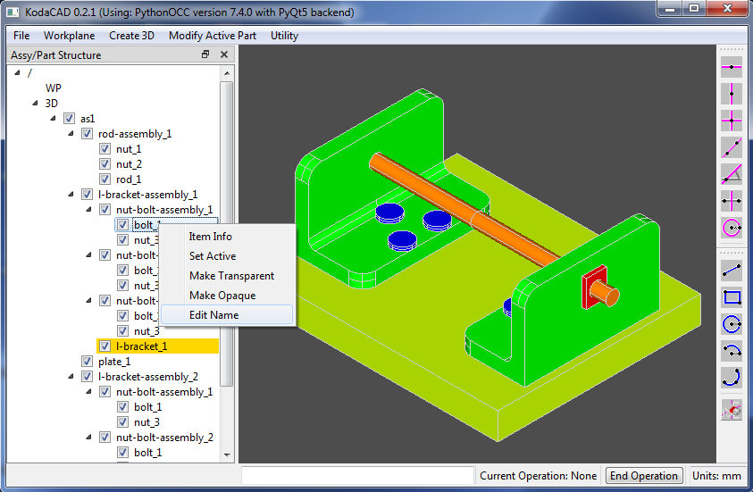
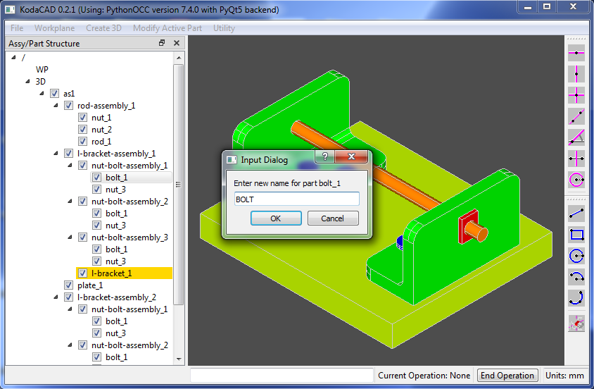
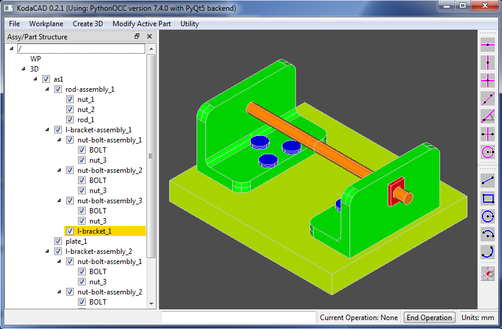
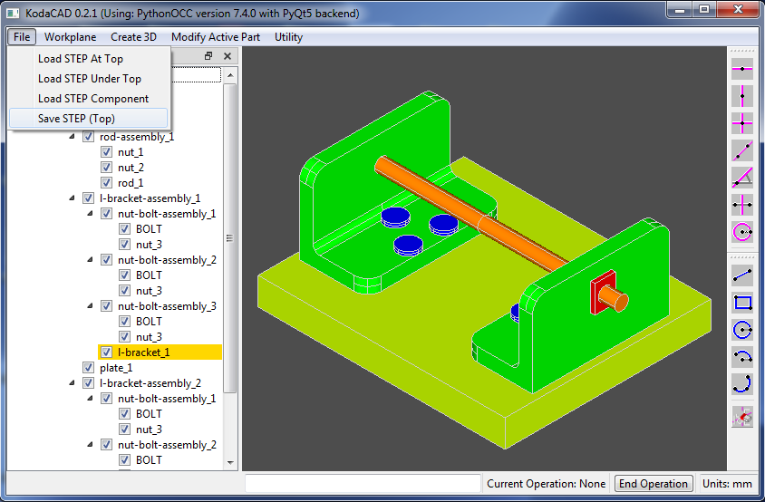
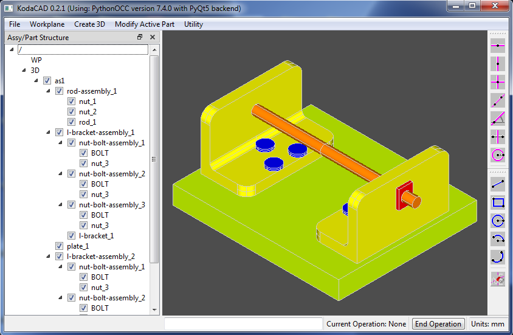

In the menubar, click on File then Load STEP At Top.
Navigate to the file 'as1-oc-214.stp' and load it.
In the tree view window, left click on the part l-bracket_1 then right click on it to get the drop down menu.
Select Set Active. The color of the tree view item will turn yellow.
Now use the check boxes to show only l-bracket-assembly_1
Then zoom in using one of these techniques:
Apply fillets to the corners of the bracket, as shown. I applied a radius of 5mm to the inside corner and 10mm to the outside corners.
Now use the check boxes to show the entire assembly and right click in the graphics window to select Draw -> Fit. Notice that the changes made on the bracket are applied to both parts because they are shared instances of one part.
Next, let's edit the name of one of the bolts. Left click on one of the bolt_1 tree view items, then right click and select Edit Name.
Change the name to BOLT
Notice tht all the bolts now have the new name because they are all shared instances of a single part.
Click File then Save STEP (Top) and save the modified assembly to a file.
Close Kodacad, then restart it and load the saved file
Notice that the modifications (both the geometry mods to the bracket and the name change) are still there but the color of the modified bracket has been lost somewhere along the way.
Seriously, if anybody can help me to figure this out, I would love to hear from you.
-Doug